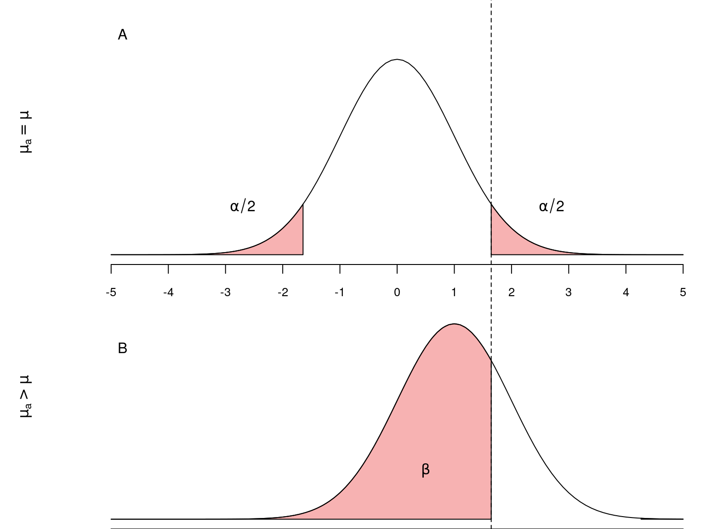

library(tidyverse)6 Introdução ao Teste de Hipóteses
Pacotes, funções e base de dados utilizadas no capítulo
Pacotes:
Um dos objetivos centrais em estatística é fazer inferências válidas para a população examinando as características de uma amostra. Considere as afirmações abaixo:
A fragmentação de habitats reduz a diversidade de espécies;
Em níveis elevados de poluentes, a mortalidade de um determinado organismo aumenta;
A remoção da área de mangue implica na redução da captura de carbono.
Todas estas afirmações são na realidade hipóteses, sobre um ou mais parâmetros de uma população estatística que podem ser testadas por meio de experimentos adequados. A experimentação nos permite tirar conclusões sobre determitada hipótese com base na amostra. Mais especificamente, queremos saber se os dados em mãos nos permitem ou não refutar uma hipótese inicial. Portanto, se desejamos fazer uma inferência sobre um parâmetro da população estatística (ex.: sua média \(\mu\)), devemos iniciar com uma afirmação sobre a posição deste parâmetro, que denominamos de hipótese nula (\(H_0\)).
Vamos a um exemplo simples;
Imagine que um modelo de climático estabeleça que a pluviosidade média entre junho e agosto nas cidades litorâneas do estado de São Paulo seja de \(110\) mm/mês.
Um cientista acredita que o modelo têm falhas e resolve tomar algumas observações sobre chuva mensal a fim de testar esta afirmação. Este cientista inicia formulando suas hipóteses estatísticas.
- Hipotese nula (\(H0\)): Inicialmente será necessário estabelecer o que chamamos de hipótese nula. Se uma análise estatística concluir que a hipótese nula deve ser falsa, então precisaremos ter me mãos uma hipótese alternativa (\(H_a\)). Assim, no caso de rejeição de \(H_0\), passaremos a assumir \(H_a\) como verdadeira. Neste exemplo teríamos:
\(H_0: \mu = 110\) mm de chuva (HIPÓTESE NULA)
\(H_a: \mu \ne 110\) mm de chuva (HIPÓTESE ALTERNATIVA)
Limite de rejeição: O segundo passo é decidir sobre o limite de rejeição, isto é, um limite a partir do qual iremos conlcuir que \(H_0\) é falsa. Este limite está baseado no que denominamos de nível de significância (\(\alpha\)) sobre o qual iremos falar adiante.
Experimentação: O terceiro passo é montar um experimento que nos permita testar a hipótese nula, tomando amostras sobre o fenômeno em questão. Note que as hipóteses nula e alternativa se referem a predições sobre a posição da média populaçional \(\mu\), que é justamente a informação que não temos, mas sobre a qual queremos conhecer. Como não temos acesso à \(\mu\), nossa opção é tomar amostras do fenômenoe (i.e. quantidade de chuva em diferentes localidades), calcular a média amostral \(\overline{X}\) e compará-la com a média populacional descrita em \(H_0\).
6.1 Probabilidade e teste de hipóteses
A média \(\overline{X}\) de uma amostra será nossa melhor evidência a respeito de \(\mu\). Tendo este valor, podemos nos perguntar:
O valor obtido de \(\overline{X}\) é condizente com o esperado segundo \(H_0\)?
Caso \(\overline{X}\) esteja muito próximo a \(\mu\), não há evidências para rejeitar \(H_0\). Por outro lado, um valor de \(\overline{X}\) muito distante de \(\mu\) irá colocar em dúvida a afirmação estabelecida em \(H_0\). O ponto relevante aqui é decidirmos quão distante de \(\mu\) deve estar \(\overline{X}\) para que rejeitemos \(H_0\)? Esta resposta poderá ser respondida somente com o auxílio de um modelo probabilístico aplicado ao experimento em questão.
Seja \(H_0\) verdadeira, é esperado que a probabilidade de \(\overline{X}\) estar próximo a \(\mu\) é alta. Portanto, uma pergunta melhor formulada seria:
Sendo \(H_0\) verdadeira, qual é a probabilidade de que uma determinada média amostral \(\overline{X}\) esteja tão ou mais distante de \(\mu\) quanto o observado em nossa amostra particular?
6.1.1 Um modelo de distribuição das médias amostrais para testar \(H_0\)
A pergunta feita acima é de natureza probabilística, de modo que para respondê-la iremos precisar estabelecer um modelo probabilístico para a distribuição das médias amostrais. De acordo com o que temos discutido até este ponto, Teorema Central do Limite (TCL) (Capítulo 4) estabelece que a distribuição normal é um bom modelo neste situação.
Desta forma, para um \(H_0\) verdadeiro, seria esperado que a distribuição das médias amostrais resultantes de um procedimento experimental tivesse o formato de um distribuição normal, centrada em \(110\) mm. Segundo o TCL, a distribuição seria centrada em \(\mu\) e o desvio padrão seria definido pelo erro padrão da média (Capítulo 2), isto é, \(\sigma_{\overline{X}} = \frac{\sigma}{\sqrt{n}}\).
Digamos ainda que o modelo climático estabeleça que desvio padrão para a quantidade de chuva seja \(\sigma = 30\). Neste caso, o erro padrão seria de \(\sigma_{\mu} = \frac{30}{\sqrt{n}}\).
Feito isto, temos em mãos o modelo probabilístico que, aliado a uma amostra particular, nos permitirá concluir se há evidências para rejeitar \(H_0\) em favor de \(H_a\).
6.1.2 Definindo o limite de rejeição para \(H_0\)
Segundo a distribuição normal, a probabilidade do valor observado \(\overline{X}\) estar tão ou mais distante de \(\mu\) na distribuição \(Z\) é calculando por:
\[z = \frac{\overline{X} - \mu}{\sigma_{\overline{X}}}\]
O valor de \(z\) calculado é chamado de estatitica do teste. Com o uso da Tabela \(Z\), esta estatística será utilizada para encontrar:
\[P(Z \ge z) = P(\overline{X} \ge \mu)\]
Como nossa pergunta se refere à distância entre \(\overline{X}\) e \(\mu\), devemos encontar também \(P(Z \le -z)\), de modo que a probabilidade que nos interessa será representada pela área destacada em vermelho na figura abaixo que nos dá \(P(Z \ge |z|)\).
A área destacada em vermelho será irá diminuir conforme \(\overline{X}\) se distancia de \(\mu\) e irá aumentar para valores de \(\overline{X}\) muito próximos a \(\mu\). Como estamos falando de uma distribuição de probabilidade, esta área mede a probabilidade de encontrarmos \(\overline{X}\) pelo menos a uma dada distância de \(\mu\), assumindo que \(H_0\) seja verdadeiro. Se esta área for muito pequena, a probabilidade de que \(\overline{X}\) seja condizente com \(H_0\) diminui. Chamaremos este probabilidade de valor de p. Portanto, se \(p\) for muito pequeno dizemos que é improvável que \(\overline{X}\) seja condizente com \(H_0\), nos levando a rejeitar \(H_O\) em favor de \(H_a\).
A decisão sobre o que é uma probabilidade foi muito pequena é feita com base no limite de rejeição \(\alpha\), também chamado de nivel crítico ou nível de significância. Deste modo, a conclusão de um teste estatístico se dá por:
Se \(p > \alpha\) –> ACEITAMOS \(H_0\)
Se \(p \le \alpha\) –> REJEITAMOS \(H_0\) (e assumimos \(H_a\) como verdadeira)
6.2 Exemplificando um teste de hipóteses: o teste \(Z\)
Digamos que o número de batimentos cardíacos por minuto de um adulto em repouso tenha média \(\mu = 65\) e desvio padrão \(\sigma = 9\). Você imagina que o sedentarismo altera o batimento médio de um adulto. Para testar esta suposição você deve inicialmente determinar as hipóteses nula e alternativa:
\(H_0: \mu = 65\) batimentos por minuto
\(H_a: \mu \ne 65\) batimentos por minuto
Em seguida você determina o nível de significância (\(\alpha\)) do teste. Vamos determinar que queremos fazer o teste ao nível de significância \(\alpha = 0,05\).
IMPORTANTE: O nível de significância \(\alpha\) deve ser determinado antes da tomada de dados.
Finalmente, você seleciona ao acaso \(n = 15\) pessoas de hábito sedentário e mede seus batimentos cardíacos.
Os resultados obtidos desta amotra aleatória são:
Amostra: 65, 73, 56, 71, 69, 69, 68, 59, 73, 68, 69, 64, 67, 64, 66
que nos dá uma média amostral de:
\(\overline{X} = \frac{\sum{X_i}}{n} = \frac{65+73+56+71+69+69+68+59+73+68+69+64+67+64+66}{15} = 66.73\) batimentos por minuto;
e um erro padrão de:
\(\sigma_{\mu} = \frac{\sigma}{\sqrt{n}} = \frac{9}{3.87} = 2.32\)
Com estes resultados encontramos o valor correspondente de Z.
\(z = \frac{\overline{X} - \mu}{\sigma_{\mu}} = \frac{66.73 - 65}{2.32} = 0.75\)
Utilizando a Tabela Z, encontramos a probabilidade de obtermos valores tão ou mais extremos que \(-0.75\) e \(+0.75\).
Com isto, a probabilidade de encontarmos valores tão ou mais extermos que \(\overline{X} = 66.73\) foi calculada em \(0.227 + 0.227 =\) 0.453.
Neste exemplo, a estatística do teste foi \(z = 0.75\) o a probabilidade associada \(p = 0.453\).
Teste Z no R
X <- c(65, 73, 56, 71, 69, 69, 68, 59, 73, 68, 69, 64, 67, 64, 66)
Xm <- mean(X)
pnorm(q = Xm, mean = 65, sd = 9/sqrt(15), lower.tail = FALSE) * 2[1] 0.45572316.3 Tomada de decisão sobre \(H_0\): nível de significância
No exemplo anterior, obtivemos \(p =\) 0.453. Isto significa que:
sendo \(H_0\) verdadeira, existe uma probabilidade igual a \(0.453\) de que a média de uma amostra com \(n = 15\) esteja tão ou mais distante de \(\mu = 65\) como observado neste experimento.
Se aceitarmos que esta probabilidade é alta, então não há motivo para buscar por outras explicações. Por outro lado, se concluirmo que esta probabilidade é baixa, estamos dizendo que resultado obtido é improvável segundo a hipótese nula. Neste caso, temos espaço para buscar por hipóteses alternativas que possam explicar o fenômeno.
Para decidir se a probabilidade obtida é alta ou baixa, devemos compará-la ao nível de significância \(\alpha\) pré-estabelecido. \(H_0\) será aceita somente se a probabilidade encontrada for maior que \(\alpha\). Por outro lado, se nossa probabilidade for menor ou igual a \(\alpha\), considerarmos os resultados improváveis segundo a hipótese nula e rejeitamos \(H_0\) em favor de \(H_a\).
Um nível crítico comumente utilizado é \(\alpha = 0.05\). No exemplo acima a probabilidade foi de 0.453, um valor muito acima de \(0.05\). Dizemos portanto, que a média amostral \(\overline{X}\) não está tão distante do \(\mu\) a ponto de rejeitarmos \(H_0\).
Concluimos que, neste exemplo, \(\overline{X} = 66.73\) não nos fornece evidência suficiente para rejeitar \(H_0\).
6.4 Erros de decisão em um teste de hipóteses
A interpretação da probabilidade final esta associada à situação em que \(H_0\) seja verdadeira.
Isto nos leva perguntar: o que esperar caso \(H_0\) seja falsa?
Como não sabemos de fato, de \(H_0\) é verdadeira ou não, a tomada de decisão sobre um resultado de um teste estatístico pode nos levar às seguintes situações:
| \(H_0\) Verdadeira | \(H_0\) Falsa | |
|---|---|---|
| \(H_0\) é rejeitada | \(\alpha\) (\(\textbf{Erro Tipo I}\)) | Decisão correta (\(1-\beta\)) |
| \(H_0\) é aceita | Decisão correta (\(1-\alpha\)) | \(\beta\) (\(\textbf{Erro Tipo II}\)) |
A Tabela 6.1 nos mostra os tipos de erros aos quais estamos sujeitos ao realizar um teste de hipótese. Podemos rejeitar \(H_0\), ainda que ela seja verdadeira. O nivel de significância adotado, estabele que a probabilidade disto acontecer é \(\alpha\). Se rejeitarmos \(H_0\) quando ela é verdadeira, estaremos incorrendo em um erro de decisão que denominamos de Erro Tipo I. Consequentemente, temos uma probabilidade de \(1 - \alpha\) de aceitar corretamente \(H_0\) quando ela é verdadeira. Estabelecer um \(\alpha = 0,05\) nos garante que iremos incorrer no erro do tipo I em somente \(5\%\) das vezes que o experimento for realizado.
Um outra situação ocorre quando aceitamos erroneamente a hipótese nula que é falsa, incorrendo no Erro Tipo II. O erro do tipo II tem probabilidade \(\beta\) de acontecer. O complementar desta probabilidade (\(1-\beta\)) é denominado de Poder do Teste. Um teste poderoso é portanto, aquele que tem elevada probabilidade de rejeitar \(H_0\) quando ela é falsa.
As figuras abaixo representam as distribuições das médias amostrais e os erros do tipos I e II quando o \(H_0\) é verdadeira (\(\mu_a = \mu\)) e quando \(H_0\) é falsa (\(\mu_a > \mu\)).

Idealmente em um teste estatístico, seria interessante reduzir ao máximo os erros do tipo I e II. Ao reduzirmos o erro do tipo I, diminuindo \(\alpha\) teremos um teste mais rigoroso que raramente iria errar ao rejeitar um \(H_0\) verdadeiro (Figura A). Entretanto, este teste também raramente iria rejeitar \(H_0\) ainda que ele seja falso (Figura B). Consequentemente, ao diminuir o valor de \(\alpha\) ficamos menos propensos a cometer o erro do tipo I, porém mais propensos a incorrer no erro tipo II, isto é, não rejeitar uma \(H_0\) falsa.
Dadas estas características, o único modo que reduzir os dois tipos de erros simultaneamente é aumentando o tamanho amostral \(n\) pois, neste caso, reduzimos o erro padrão (\(\sigma_{\overline{X}}\)) e consequentemente a sobreposição entre as duas curvas acima.